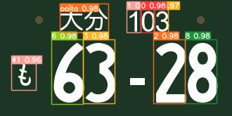

ANPR
(Auto Number Plate Recognition)
YoLoを用いて車のナンバープレート識別を行うシステムを開発

OCR Anotator
アノテーションの様にOCRのフォーマットを作成し運用するためのWEBアプリケーションを開発
https://github.com/Sweet-cleater/MEWB/
emPit@Ehime(2022 年 10 月~ 2 月) 参加
enPiT-2 Security(2022 年 9 月・12 月)
ダルマガエルプロジェクト
ANPR
(Auto Number Plate Recognition)
YoLoを用いて車のナンバープレート識別を行うシステムを開発
OCR Anotator
アノテーションの様にOCRのフォーマットを作成し運用するためのWEBアプリケーションを開発
日刊工業新聞社 モノづくり日本会議 主催 2021 年(第２１回)理工系科学技術論文コンクール 入選
C2C
第28回パターン計測シンポジウム(第108回パターン計測部会研究会) 登壇
Twitter
Atcoder
TOEIC 835 (2023 年 2 月）
鉱物鑑定士 ６級
在籍： 岡山県立大学 情報工学部 情報通信工学科 B4
生まれ： 2002年
遍歴： 京都→兵庫→岡山
趣味： 3D Graphics, Generative Coding, Photography, Coding, Degital Painting